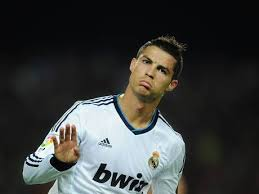
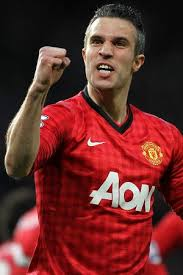

Ronaldo
 Cristiano Ronaldo dos Santos Aveiro, OIH (born 5 February 1985), commonly known as Cristiano Ronaldo, is a Portuguese footballer who plays as a forward for Spanish La Liga club Real Madrid and who serves as captain of the Portuguese national team. He became the most expensive footballer in history upon his 2009 move from Manchester United to Real Madrid in a transfer worth £80 million (€94 million/$131.6 million), a record that would later be reportedly broken by Gareth Bale, who joined Real Madrid in 2013 for £85 million (€100 million). Ronaldo's contract with Real Madrid, under the terms of which he is paid €21 million per year (after taxes), makes him the highest-paid footballer in the world, and his buyout clause is valued at €1 billion as per his contract.
Ronaldo Clubs
Ronaldo was the first player playing in England to win all four main PFA and FWA awards, doing so in 2007. In 2008, Ronaldo won the Ballon d'Or. He placed second in the Ballon d'Or in 2007, 2009, 2011 and 2012. He was awarded the European Golden Shoe in both 2008 and 2011. In 2008, he won three of the four main PFA and FWA trophies and was named the FIFA World Player of the Year, FIFPro Player of the Year, World Soccer Player of the Year, and the Onze d'Or.In 2007 and 2008, Ronaldo was named FWA Footballer of the Year. Ronaldo was the inaugural winner of the FIFA Puskás Award for the Goal of the Year in 20091. 2002-2003 Sporting Clube de Portugal 31 caps and 5 Goals
2. 2003-2009 Mancherster Utd 292 caps and 118 Goals
3. 2009- current Real Madrid 219 caps and 227 Goals
Messi
 Lionel Andrés "Leo" Messi (Spanish pronunciation: [ljoˈnel anˈdɾes ˈmesi]; born 24 June 1987) is an Argentine footballer who plays as a forward for La Liga club FC Barcelona and the Argentina national team. He serves as the captain of his country's national football team. By the age of 21, Messi had received Ballon d'Or and FIFA World Player of the Year nominations. The following year, in 2009, he won his first Ballon d'Or and FIFA World Player of the Year awards. He followed this up by winning the inaugural FIFA Ballon d'Or in 2010, and then again in 2011 & 2012. He also won the 2010–11 UEFA Best Player in Europe Award. At the age of 24, Messi became Barcelona's all-time top scorer in all official club competitions. At age 25, Messi became the youngest player to score 200 La Liga goals.
Lionel Andrés "Leo" Messi (Spanish pronunciation: [ljoˈnel anˈdɾes ˈmesi]; born 24 June 1987) is an Argentine footballer who plays as a forward for La Liga club FC Barcelona and the Argentina national team. He serves as the captain of his country's national football team. By the age of 21, Messi had received Ballon d'Or and FIFA World Player of the Year nominations. The following year, in 2009, he won his first Ballon d'Or and FIFA World Player of the Year awards. He followed this up by winning the inaugural FIFA Ballon d'Or in 2010, and then again in 2011 & 2012. He also won the 2010–11 UEFA Best Player in Europe Award. At the age of 24, Messi became Barcelona's all-time top scorer in all official club competitions. At age 25, Messi became the youngest player to score 200 La Liga goals.
Braca
Messi played in Barcelona's junior Infantil B and Cadete B & A teams from 2000 to 2003 (scoring 37 goals in 30 matches in Cadete A). He was nearly released from the club in 2003 because of financial constraints, but his youth coaches convinced management to keep him

Style of Play
Messi has been compared to compatriot Diego Maradona, due to their similar playing style and stature, which gives him a lower centre of gravity than most players, allowing him to be more agile and change direction more quickly, helping him to evade tackles.

Messi Clubs
1. 2004 – current. Barcelona 395 caps and 327 Gaols
Salary
In March 2010, France Football ranked him at the top of its list of the world's richest footballers, ahead of David Beckham and Cristiano Ronaldo, with €33 million in combined income from salaries, bonuses and off-field earnings. His net wealth is estimated at $110 millIon.
Rooney
 Wayne Mark Rooney /ˈruːni/ (born 24 October 1985) is an English footballer who plays as a forward for Premier League club Manchester United and the England national team. Aged nine, Rooney joined the youth team of Everton, for whom he made his professional debut in 2002 at the age of 16. He spent two seasons at the Merseyside club, before moving to Manchester United for £25.6 million in the 2004 summer transfer window. The same year, Rooney acquired the nickname "Wazza".[4] Since then, with Rooney in the team, United have won the Premier League five times, the 2007–08 UEFA Champions League, one FIFA Club World Cup and two League Cups. He also holds two runner-up medals from the Champions League and has twice finished second in the Premier League. In September 2013, Rooney scored his 200th goal for United, making him the club's fourth-highest goalscorer of all time.
Wayne Mark Rooney /ˈruːni/ (born 24 October 1985) is an English footballer who plays as a forward for Premier League club Manchester United and the England national team. Aged nine, Rooney joined the youth team of Everton, for whom he made his professional debut in 2002 at the age of 16. He spent two seasons at the Merseyside club, before moving to Manchester United for £25.6 million in the 2004 summer transfer window. The same year, Rooney acquired the nickname "Wazza".[4] Since then, with Rooney in the team, United have won the Premier League five times, the 2007–08 UEFA Champions League, one FIFA Club World Cup and two League Cups. He also holds two runner-up medals from the Champions League and has twice finished second in the Premier League. In September 2013, Rooney scored his 200th goal for United, making him the club's fourth-highest goalscorer of all time.
Rooney Clubs
1. 2002 - 2004. Everton - 77 caps and 17 Goals
2. 2004 - current. Mancherter Utd - 421 caps and 207 Goals
RVP
Robin van Persie born 6 August 1983) is a Dutch footballer who plays as a striker for Manchester United and the Dutch national team. He is a youth product of Feyenoord. Having joined Arsenal in 2004, Van Persie became the club captain on 16 August 2011, one year before he joined rivals Manchester United. He is recognized as one of the best stikers in the world. His playing style and ability have drawn comparison to Dutch legend Marco van Basten. On 7 June 2013, Van Persie was appointed captain of the Dutch national team
He made his breakthrough at another hometown club Feyenoord, where he spent three seasons and won the 2002 UEFA Cup. He was named the Dutch Football Talent of the Year for the 2001–02 season. Disagreements with manager Bert van Marwijk culminated in a change of club and Van Persie moved to Premier League side Arsenal for £2.75 million in 2004 as a long-term replacement for Dennis Bergkamp. He won the FA Community Shield and the FA Cup in his first season with the London club but did not win another major trophy for the rest of his eight-year spell at Arsenal. Van Persie has been named Premier League Player of the Month three times. In 2012, Van Persie was ranked 7th in The Guardian's list of 100 Best Footballers in the world.
RvP Clubs
1. 2001 - 2004. Fahenoord - 78 caps and 22 Goals
2. 2004 - 2012. Aresnal - 277 caps and 132 Goals
3. 2012 - current. Mancherter Utd - 63 caps and 40 Goals